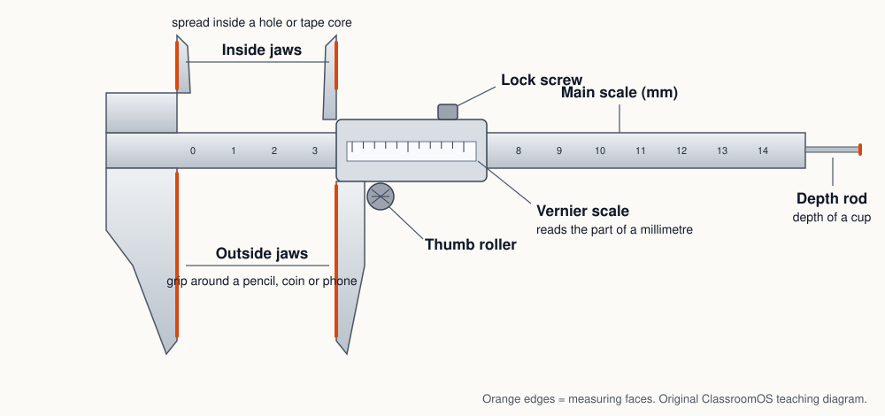
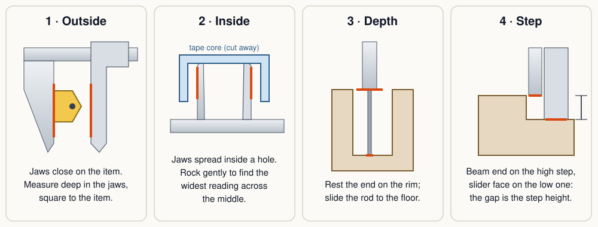
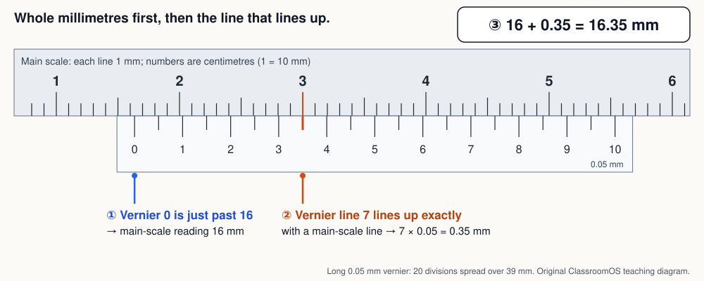
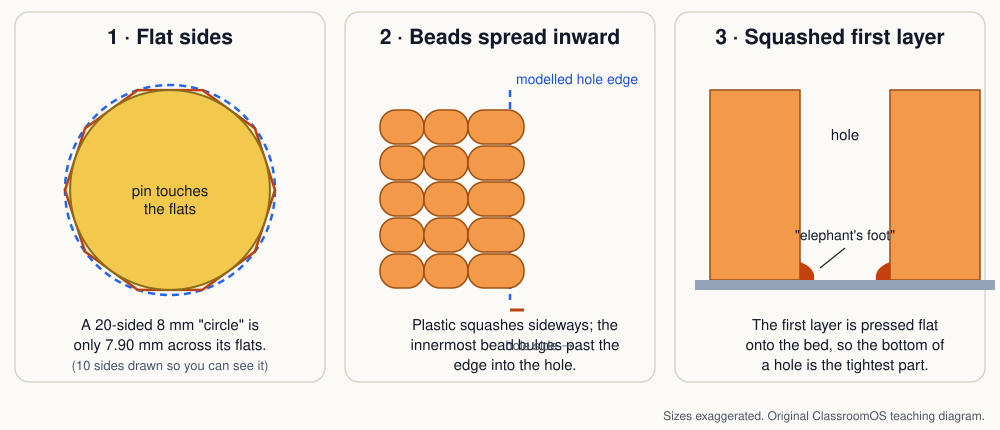
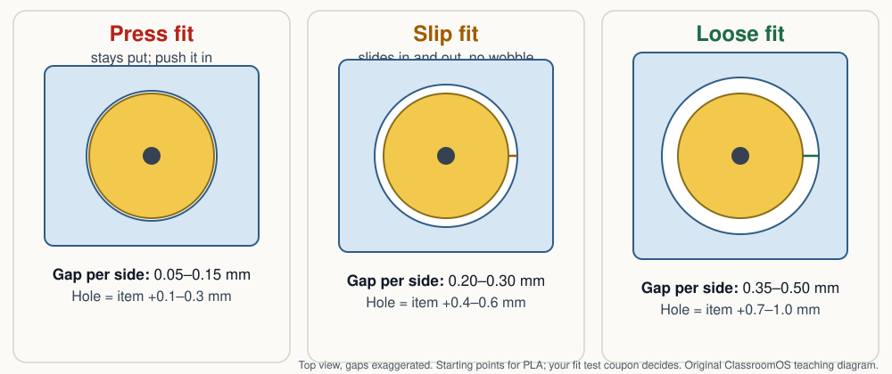

3D Design · Make it real · Measure and Fit
Measure the Real Thing, Then Design the Gap
A pencil holder whose hole is the exact size of the pencil will not hold the pencil: it won't go in. A battery clip modelled from a guess will rattle or crack. Every useful print that touches a real object starts with two numbers: how big the object really is, and how much air to leave around it. In this lesson you measure like a machinist, choose a fit, and print a small test plate that tells you what your printer actually does.
Start with a real object: a pencil and a hole
Hold up a hexagonal pencil. Measured across two flat sides, a typical one is about 7 mm; across two corners, about 8 mm. Which number do you design the hole around? (The corners: they have to clear.) And how much bigger than 8 mm? Too little and the pencil jams; too much and it flops over. That "how much bigger" is the clearance, and choosing it on purpose is called designing a fit.
1 · Units: work in millimetres
Slicers, CAD apps and printer specifications count in millimetres, so measure in millimetres too. A millimetre is about the thickness of a credit card; a printed layer is usually 0.2 mm, a fifth of that. If a size comes to you in inches, convert it once, at the start: since 1959 the inch has been defined as exactly 25.4 mm.
Where to set units in the app you use:
2 · The caliper: one tool, four measurements
A ruler is good to about half a millimetre. For parts that fit, you need a caliper: a ruler with two jaws that close on the object, so you can't misjudge where the edge is. Most calipers measure four ways.


Habits that make a measurement trustworthy
- The jaw tips are sharp. Point them away from people, and never use a caliper as a scribe or a screwdriver.
- Never measure anything moving or hot: not a running printer, not a fresh print still on the bed.
Reading a vernier
Many classroom calipers have no battery. They use a vernier scale, a clever second scale invented by the French mathematician Pierre Vernier in 1631. Its lines are spaced a tiny bit differently from the main scale's, so exactly one of them lines up with a main-scale line, and which one tells you the fraction of a millimetre.

Caliper Reading Lab
A caliper closes on a classroom object. Read it and type the reading. Each object is measured three times, slightly differently each time, just like a real one. After three good readings, send the average straight to the fit calculator. Try every scale: the 0.1, 0.05 and 0.02 mm verniers and a digital caliper (which may need zeroing, and can be switched to inches).
3 · How accurate is "accurate"?
Three words that sound alike mean different things:
So a caliper is far better than you need. The printer is the loose link. Print services that sell desktop filament (FDM) parts quote a tolerance of about ±0.5%, but never better than ±0.5 mm, and plastics shrink a little as they cool (about 0.2–1% depending on the material). A well-tuned classroom printer often does better than that, but you can't know until you test it. That is why fits are tested, not trusted.

4 · Three fits: press, slip, loose
A fit is described by the gap on each side, between the real object and the printed wall. The hole is modelled bigger than the object by twice that, once for each side. These are starting values for PLA on a 0.4 mm nozzle at 0.2 mm layers; your coupon decides the final numbers.

| Fit | Gap per side | Model the hole at | How it feels | Use it for |
|---|---|---|---|---|
| Press | 0.05–0.15 mm | item + 0.1 to 0.3 mm | Takes a firm push; stays put upside down. | Magnets, pegs, a pencil that must not fall out. |
| Slip | 0.20–0.30 mm | item + 0.4 to 0.6 mm | Slides in and out by hand, no wobble. | Lids, drawers, parts you swap. |
| Loose | 0.35–0.50 mm | item + 0.7 to 1.0 mm | Drops in and turns freely; may wobble a little. | Axles, hinges, print-in-place moving parts. |
A peg going into a real hole works the other way: model the peg smaller than the hole by twice the gap.
Fit calculator
Type the item's measured size (or send it from the Reading Lab), pick a fit, and get the number to type into CAD. Once you have printed the coupon, enter your printer's correction and the calculator builds it in.
Build it in any CAD app, or try the numbers straight away in Workbench (a cylinder hole in a box) or one of Forge's parametric parts, which check gaps against your class clearance.
5 · Hands-on task: the fit test coupon
A test coupon is a small, quick print that answers one question. This one is a flat plate with a row of holes (or slots) that step from exactly the item's size up through the press, slip and loose ranges. You push the real item into each one and record how it feels. Ten minutes of printing replaces a whole evening of reprinting a part that doesn't fit.
Steps
- Measure your item three times in the Reading Lab's way and write the average in Item size. (A pencil across its corners, a marker barrel, an AA battery, a magnet.)
- Download and slice the coupon flat on the bed, supports off, with the same filament and settings you will use for the real part. Write the settings on the record sheet.
- Print and cool it fully. Hole A, the smallest, is at the notched corner.
- Measure each printed hole with the inside jaws (rock gently, keep the biggest reading) and write it in Printed size.
- Try the item in every hole and choose how it fits. Find your press, slip and loose holes.
- Work out your correction: modelled size − printed size, averaged over a few holes. Put it into the fit calculator. Now your next part fits the first time.
| Object and what I measured | |||
|---|---|---|---|
| Three readings (mm) | |||
| Average · spread (mm) | |||
| Printer, filament, layer height | |||
| My correction (mm) | |||
| Fit I chose, and the size I will model | |||
| Did the real part fit? What would I change? | |||
Use Save answers in the lesson's heart | save | print pill to keep the sheets in your browser, or print the lesson as a handout. Keep the coupon: label it with the filament and settings and it is your printer's ruler for the rest of the quarter.
Pick your level
K–2 · Bigger or smaller?
Sort real objects into teacher-printed holes: which one fits, which is too tight, which wobbles? Measure a pencil with a paper strip and compare it to a classmate's.
3–5 · Read to 0.1 mm
Use the Reading Lab on the 0.1 mm vernier and a digital caliper. Measure one object three times and find the average. Try the item in a teacher-printed coupon and name each fit.
6–8 · Design the fit
Read 0.05 mm verniers. Measure your Trio item, use the fit calculator, print the coupon and fill in the whole record sheet. Explain why holes print small.
9–12 · Correct the printer
Read 0.02 mm verniers and inches. Work out a correction from several holes, apply it, and show the final part fits first time. Compare your coupon to the ±0.5% / ±0.5 mm figure.
Checkpoint
You're ready to move on when you can:
- Check a caliper's zero and measure outside, inside and depth correctly.
- Read a 0.05 mm vernier in two steps, and explain why exactly one line lines up.
- Convert between inches and millimetres with 25.4.
- Explain the difference between resolution, accuracy and precision.
- Choose press, slip or loose for a job, and model the hole or peg size for it.
- Find your printer's correction from a coupon and use it.
Next: print a part that moves inside another in Design a Moving Fit, join parts with snap-fits and pegs in Joining Parts, or check why a print came out wrong in Print Troubleshooting. New to meshes? Start at What Is a 3D Model?
Practice Problems
Easy1. A part is 2 inches long. How long is it in millimetres?
Easy2. On a 0.05 mm vernier, the vernier 0 is just past 23 on the main scale, and line 9 lines up. What is the reading (mm)?
Easy3. A magnet needs to go in and never fall out. Which fit?
Medium4. On a 0.02 mm vernier, the main scale shows 7 mm and line 18 lines up. What is the reading (mm)?
Medium5. You measured a pencil three times: 7.92, 7.96 and 7.94 mm. What is the average (mm)?
Medium6. Model a slip-fit hole (0.25 mm gap per side) for that 7.94 mm pencil. What diameter (mm)?
Medium7. A tape roll's core measures 25.50 mm inside. Model a press-fit peg (0.10 mm gap per side) for it. What diameter (mm)?
Challenge8. Coupon hole D was modelled at 8.24 mm and measures 8.05 mm printed. What is your printer's correction (mm)?
Challenge9. A 5.00 mm metal axle needs a loose fit (0.40 mm per side) and your printer's correction is 0.15 mm. What hole diameter do you model (mm)?
Challenge10. A print service promises ±0.5% but never better than ±0.5 mm. For a 40 mm part, how far off (± mm) might it be?
Vocabulary
- Caliper
- A measuring tool with jaws that close on an object, read from a scale or a display.
- Vernier scale
- A sliding second scale whose one lined-up line shows the fraction of a millimetre.
- Zero (zeroing)
- Checking that the closed jaws read 0, and resetting a digital caliper if not.
- Resolution
- The smallest step a tool can show.
- Accuracy
- How close a measurement is to the true size.
- Precision
- How close repeated measurements are to each other.
- Tolerance
- How far a made part is allowed to be from its design size, such as ±0.2 mm.
- Clearance
- The planned gap between two parts that fit together.
- Fit
- How two parts go together: press (tight), slip (sliding) or loose (free to turn).
- Test coupon
- A small test print that answers one question about your printer before the real part.
- Elephant's foot
- The first printed layer squashed wider than the model, making the bottom of holes tight.
Sources
- NIST Office of Weights and Measures, SI Units: Length ("The value for the inch, derived from the value of the Yard effective July 1, 1959, is exactly equivalent to 25.4 mm").
- Hubs knowledge base, What is dimensional accuracy in 3D printing (FDM desktop ±0.5%, lower limit ±0.5 mm; shrinkage 0.2–1%).
- Mitutoyo 500-196-30 ABSOLUTE AOS Digimatic caliper specifications (0–150 mm, resolution 0.01 mm, accuracy ±0.02 mm), as listed by a Mitutoyo distributor.
- Prusa Knowledge Base, Elephant foot compensation (the first layer squished against the bed).
- P. Vernier, La construction, l'usage, et les propriétés du quadrant nouveau de mathématiques, Brussels, 1631 (the first description of the vernier scale).
- Fit gaps: this site's Design a Moving Fit and 3D Printing lessons use the same 0.35–0.50 mm moving clearance for PLA on a 0.4 mm nozzle; treat every number here as a starting point to test.
Next: Design a Moving Fit · Joining Parts · Materials & Strength · Blueprint Drafting · Forge · Workbench